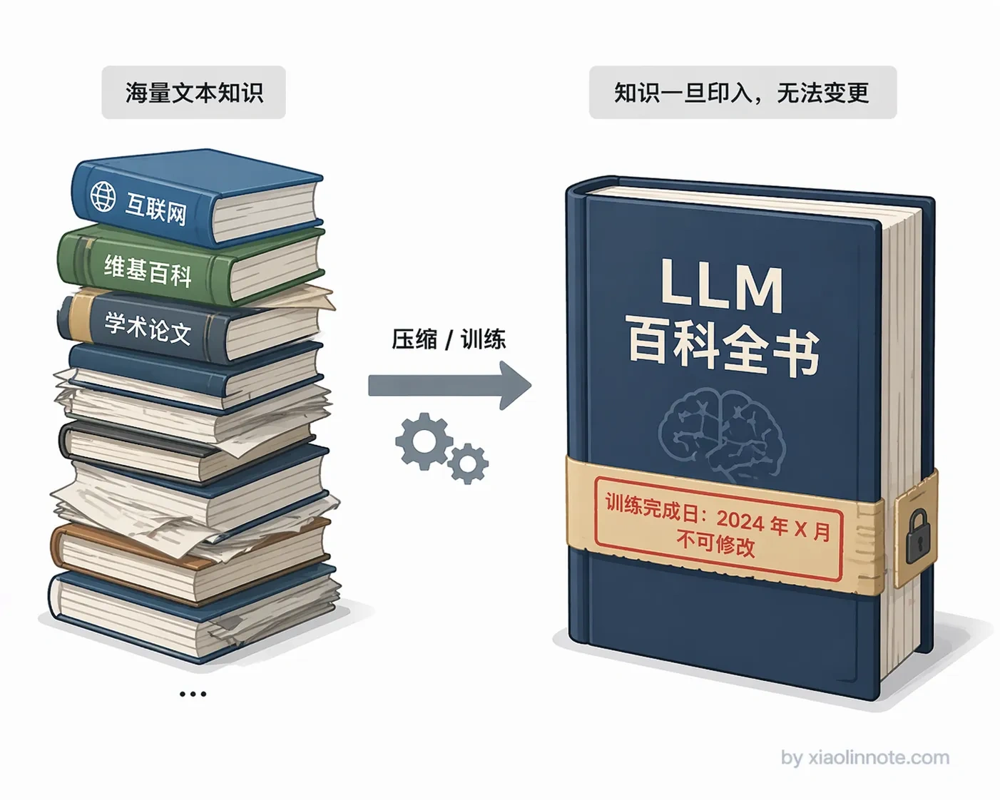
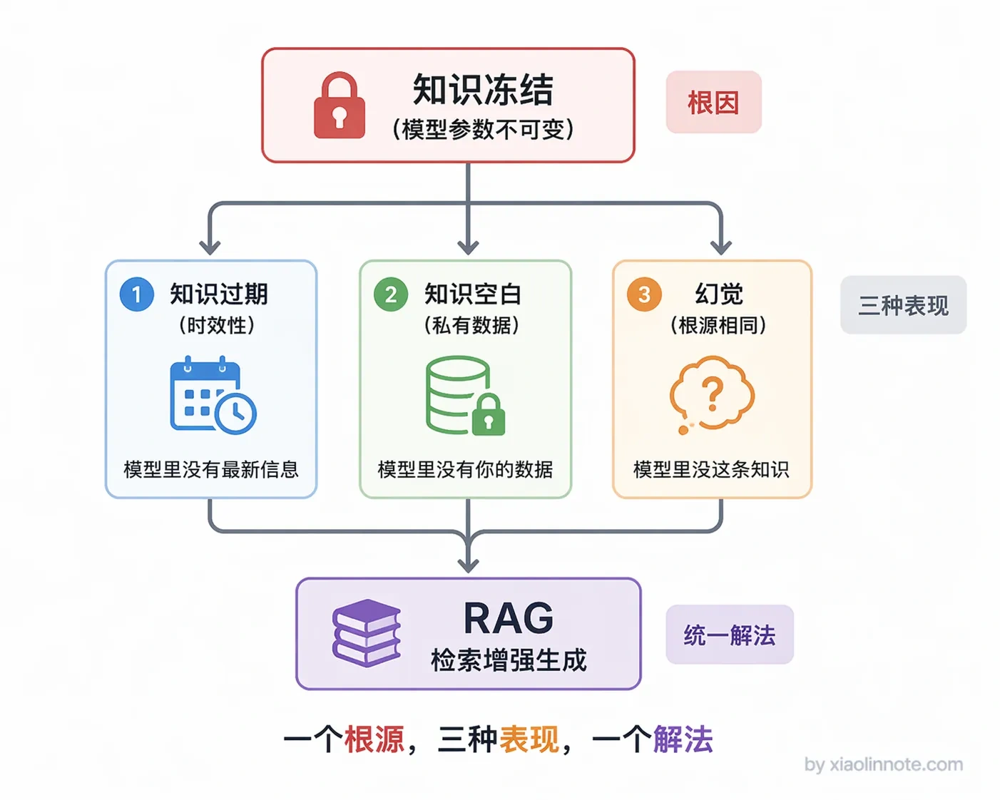
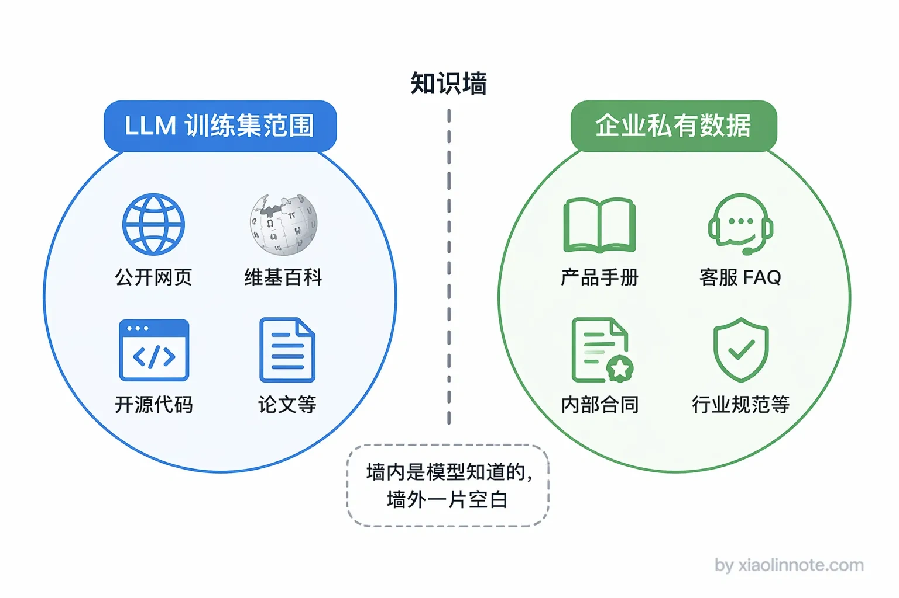
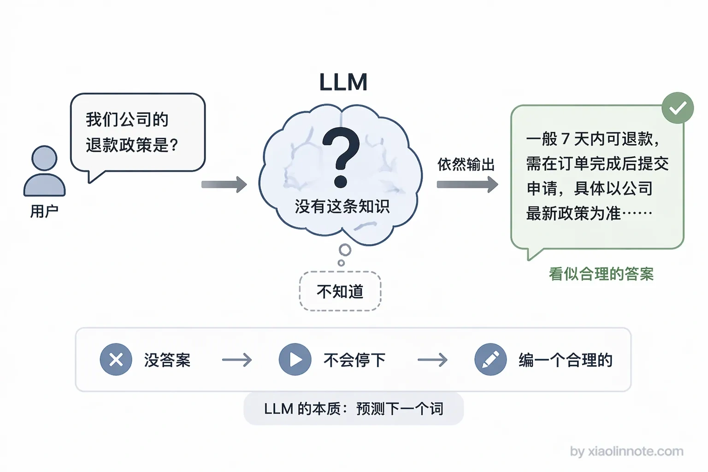
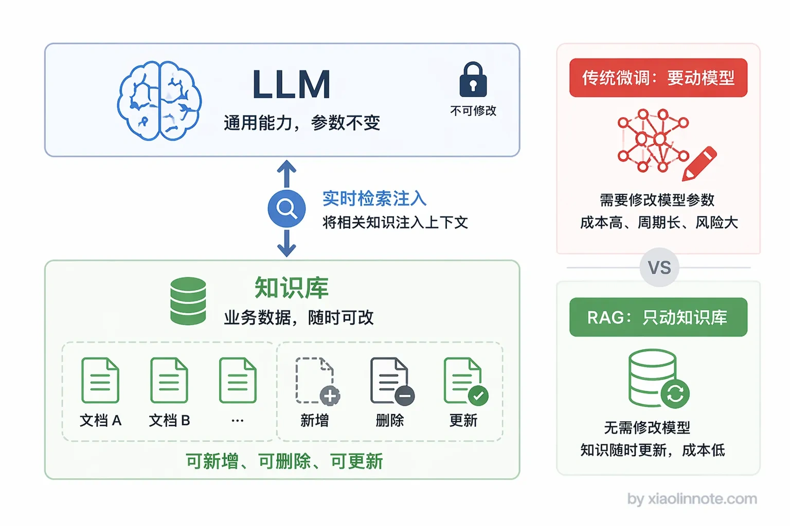

大模型的 RAG 主要用来解决什么问题？
👔面试官：你说你做过 RAG 项目，那 RAG 主要用来解决什么问题？
🙋♂️我：RAG 就是让大模型变得更聪明，回答质量更高。
👔面试官：哪个大模型不够聪明？你这不是在说废话吗？我问的是 RAG 解决的具体问题是什么，你连问题都没说清楚怎么谈方案？
🙋♂️我：哦，就是大模型有时候会编答案，RAG 可以让它不编。
👔面试官：幻觉只是其中之一。知识时效性呢？私有知识覆盖呢？这两个你都没提到。而且你以为 RAG 是专门解决幻觉的？幻觉只是知识缺失的副产品，根源是模型的知识冻住了，你得从根源上讲。
🙋♂️我：呃，知识冻住了是指训练数据过期了吧，那私有数据呢？
👔面试官：你连问题都说不全，怎么做的 RAG？回去想清楚再来吧。
好吧，这道题看似简单，但真被问到的时候很多人只记得「幻觉」两个字，其实 RAG 解决的是一整类问题。下面我来梳理清楚。
💡 简要回答
RAG 主要解决三个问题。
第一是知识时效性，LLM 训练完知识就固定了，训练截止日期之后发生的事它一无所知；第二是私有知识覆盖，公司内部文档、行业专有数据根本没有机会进训练集，LLM 对这些内容是空白的；第三是幻觉问题，没有知识依据时 LLM 容易「自己发挥」编出一个听起来合理但实际错误的答案，给了它参考资料之后幻觉就少很多。
这三个问题都与模型参数不是实时、可审计的外部知识库有关，但幻觉还可能来自检索错误、指令冲突、推理错误或格式生成。RAG 的解法是把候选知识放到外部，在推理时检索并注入；它缓解知识缺口，不会彻底绕开所有限制。
📝 详细解析
LLM 的「知识冻结」问题
要理解 RAG 解决了什么问题，得先搞清楚一件事：LLM 的知识到底是怎么来的？它为什么会有「不知道」的时候？
LLM 在预训练阶段，通过阅读海量的文本，把这些文本里包含的知识逐渐「编码」到模型的参数权重里。你可以把它想象成一本写死了内容的百科全书，书里的知识丰富，但一旦印刷完成就没法再改内容了。

那这本「百科全书」有没有截止日期呢？当然有。训练数据收集到什么时候，模型就只知道那个时间点之前的事情。训练完成之后，不管外部世界发生了什么，模型的参数都不会自动更新，这就是「知识冻结」。
你可能会想，那就重新训练一遍呗？理论上可以，但训练成本、数据准备、评估和发布周期会随模型规模与基础设施变化，不能用一个固定金额概括。微调主要改变行为或任务适配，也不天然提供逐条溯源；RAG 也并非免费，需要维护索引和权限。
所以「知识冻结」不是一个可以靠重新训练轻易解决的问题，它是 LLM 架构的固有特性。这个特性直接导致了三个问题，而且这三个问题是一环扣一环的。

知识过期：训练数据有截止日期
第一个问题最直观，就是知识过期了。你问 LLM「今年发布的某款产品有哪些新功能」，如果它的训练数据截止在发布日期之前，它不知道，但它不会说「我不知道」，而是会用自己见过的历史规律，「推测」出一个听起来合理的答案。这个答案可能是错的，但它说得很自信。
换一个更有实际影响的例子：金融场景里用 LLM 来辅助分析，如果模型不知道某公司最近一季度的财报数据，它给出的分析就是基于过期信息的，参考价值大打折扣。这类问题在 LLM 刚发布时不那么明显，但随着时间推移，训练数据越来越陈旧，时效性问题会越来越严重。
但时效性只是一个维度，还有一类知识是「从一开始就没进过训练集」的。
知识空白：私有数据根本没进过训练集
这就引出了第二个问题。公开互联网上的知识，LLM 或多或少见过；但每家公司的内部文档，比如产品手册、客服知识库、合同模板、行业规范，这些东西根本不会出现在公开训练数据里。时效性说的是「旧了」，私有知识说的是「压根没有」。
你让 LLM 扮演一个客服机器人，回答「我们产品的退款政策是什么」，如果没有可信的内部资料和检索/权限链路，就不能依赖它给出公司特定政策；它可能拒答，也可能生成看似合理的答案。企业私有知识还需要权限过滤、版本和更新流程，而不只是把文档塞进库。

那知识过期和知识缺失加在一起，会导致什么后果呢？就是幻觉。
知识缺失的副产品：幻觉
前面两个问题都指向同一个现象，就是幻觉。
为什么会产生幻觉？因为 LLM 的核心机制是「预测下一个词」，它在训练时的目标就是「给定前面的文字，预测下一个最可能的 token」，这个机制天然倾向于一直生成下去，直到输出停止符。它没有内置「我不确定就停下来」的开关，也没办法「知道自己不知道」。当参数里的知识不够用的时候，它只能硬着头皮往下生成，把相关的、不相关的知识拼凑出一个「听起来合理」的答案，用户很难分辨哪句话是真实的、哪句话是编出来的。
很多人有个误区，以为幻觉只来自知识缺失。知识过期或缺失会增加风险，但检索错误、上下文冲突、推理错误、提示注入和格式生成也会导致幻觉，因此需要多层治理。

理解了这一点，你就会明白 RAG 是降低“缺少外部依据”风险的一种方案，不是解决幻觉最有效或唯一的方案。高风险场景还需要来源核验、规则/工具校验、拒答、人工审核和权限控制。
RAG 是怎么解决这三个问题的
三个问题的根源搞清楚了，RAG 的解法就很好懂了。既然知识冻在参数里是一切问题的根源，那能不能不把知识放在参数里？
RAG 的解法就是这样：把知识存到外部知识库，用的时候检索并注入上下文，减少对模型参数记忆的依赖；它仍受解析、召回、上下文窗口和生成能力限制。
具体来说，知识被整理成文档，预处理后存入向量数据库；用户提问时，先去数据库里检索最相关的内容片段，把这些片段和用户的问题一起塞进 prompt，让 LLM 基于这些「参考资料」来回答，而不是靠自己的记忆凭空作答。
这一招可以缓解三类问题，但不是自动生效：新内容要完成解析、索引和版本发布；公司文档要通过权限过滤且必须被正确召回；有了上下文也可能被模型误读或被恶意文档注入。来源标注能帮助核验，但不等于答案一定正确。
因此，RAG 的边界可以这样记：它主要解决“回答时有没有可检索、可授权、可更新的依据”；它不自动解决“依据是否被正确解析/召回”“模型是否忠实引用”“用户是否有权看到”以及“需要不需要改变模型行为”。这些要通过索引质量、生成约束、访问控制和评估共同完成。
简单说，RAG 给 LLM 提供外部参考资料，降低对参数记忆的依赖。知识管理和模型能力可以相对解耦，但更新仍涉及索引发布、权限同步、评估和回滚；是否是首选要结合业务风险、数据结构和延迟预算。

🎯 面试总结
回到开头那段面试，RAG 解决的问题绝对不是一句「让大模型更聪明」就能糊弄过去的。
面试官问这个问题，想听到的是你对 LLM 局限性的系统理解。你需要讲清楚三个问题：知识时效性（训练数据有截止日期）、私有知识缺失（企业内部数据没进过训练集）、幻觉（没有依据时模型会编答案）。这三个问题的根源是同一件事：知识被冻在了模型参数里。
然后要说清楚 RAG 的解法思路：把知识从模型参数里搬到外部知识库，用的时候实时检索注入，不动模型本身。这个思路同时解决了三个问题，而且知识可以随时更新、答案可以溯源。
如果面试官追问「那幻觉是不是 RAG 专门解决的」，你要能回答：幻觉只是知识缺失的副产品，RAG 解决的是根源，不是单独在治幻觉。